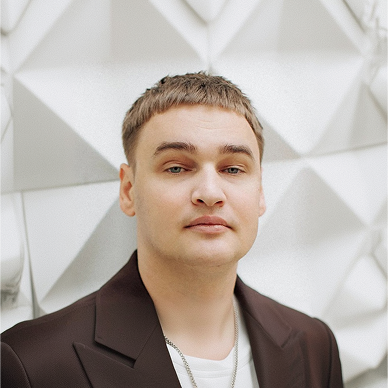
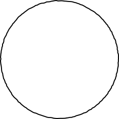

Если я сделал постер в 1080х1350 для Инстаграма и потом появилась потребность распечатать его — это будет проблемой?

Ну вот у меня почему-то картинки некоторые в Illustratore не отображаются после сохранения из Фигмы, хотя в PDF есть
Привет! Начала работать в иллюстраторе и делаю меню для печати. Можете пожалуйста подсказать, как выполнить все правильно
Вылеты вообще не понимаю, что это такое
Уже на монтаже увидели косяк с логотипом
Всем привет! Ребята, кто-то может схэлпить, пожалуйста, перевести корел в ai или пдф? Мне прислали допотопные файлы, а у меня корела нету.
Дизайнер просит какие-то ТТ от типографии. Что это вообще?
Проблема в том, что особо нигде не почитаешь об этом, никто тебе об этом не скажет
Нужно напечатать мерч — кружки, футболки, шоперы. Все говорят разное: сублимация, шелкография, DTF. Что выбрать?
Поняла, что с подготовкой замучаюсь
Сидишь как дурак и пытаешься понять, какой синий тебе нужен
Заказал ламинацию, а клиент хотел soft-touch. В ТЗ не прописали
Ребят, подскажите в каком формате нужно сохранить изображение, чтобы напечатать наклейку? Я не помню
Всем привет, может кто-нибудь подскажет где можно изучить все нюансы при печати во время создания проектов? Может существует отдельная дисциплина на этот счет?
Заказчик очень просит поставить текстовый фрейм прямо к краю макета. Может есть способы, как обезопасить его при обрезке?
Всем шалом! Мне нужно подобрать цвет смук как на фото) есть какой-нибудь онлайн-определитель кодов по фото?
Как правильно действовать с рисунками, которые вставила? И в каком формате сохранить лучше?
Всем привет! Подскажите, а как в индизайне сделать разные поля под обрез у разных страниц?
И еще столкнулась с проблемой перевода ргб в цмик... при переводе получилось прямо фу бе
Люди добрые, как подготовить к печати папку и визитки? Есть ли у кого-то готовый шаблон?
Я вам хотела заплатить за допечатную подготовку, чтобы вы всё сделали нормально. Почему я должна сейчас всё это делать?
Насколько сюрпризом будет цветовая гамма для заказчика при печати в типографии?
Ребята, подскажите, пожалуйста, баннер 1х10 метров в печать сдавать обязательно тиф, или пдф подойдет.? что-то у меня виснет иллюстратор при экспорте в тиф((
Не знаю чем отличается офсет от цифры. Кому заказать?
Постоянно происходит какая-то хрень: промахиваюсь с размерами, по цветам не то, полей не того
я думала пдф тоже можно отправлять на печать. А там уже технический дизайнер в типографии переводит в нужный им формат
Клиент утвердил цвет на экране, а на печати вышло совсем другое. Клиент в ярости
Проблемы с допечаткой?
Мы сделаем курс, который сильно всё упростит
Когда делаешь интерфейс, под рукой документация, гайдлайны и юай-киты, а в крайнем случае можно спросить нейронку. Ошибку в коде можно исправить в тот же день, макет для экрана — пересобрать за час.
В печати всё иначе. Единой документации нет: у каждой типографии свои требования, а за ошибку платишь из своего кармана — напечатанную с ошибкой листовку не засунуть обратно в принтер.
Курсы, которые есть дают общую теорию.
Решений в них нет, только базовые заклинания: «готовьте в CMYK», «сделайте вылеты под обрез».
Мы все знаем что такое CMYK, а попасть в цвет на бумаге всё равно не можем.


Расскажем о работе с печатью от лица трёх экспертов



Паша
Тоня
Настя
Дизайнер. Подготовил к печати очень много макетов и заработал на это много денег
Менеджер с опытом ведения проектов
на 400+ миллионов рублей
Управляет своей типографией. С детства в печатном деле


Команда курса
Реализовать курс будем командой из трёх человек. Уже есть руководитель и дизайнер!
Будем делать курс не за гонорар, а за процент от продаж и предзаказов.
План такой: делаем три урока до защиты диплома, успешно защищаемся, продолжаем пилить курс дальше и зарабатывать на продажах.
дизайнер
Маша Вирко
Поможет сформировать визуал курса, сделать иллюстрации и задизайнить промостраницу

нам бы
Редактора
Чтоб писать уроки, объяснять сложные термины простыми словами и не скучно
Часть I. До проекта
1. Зачем готовить макет в печать
2. Что сделать до старта проекта
3. Как не терять файлы
и вносить правки
4. Какой тип печати для чего
5. Про бумагу, плёнку и ПВХ
6. Форматы и конструкции
Часть II. Во время проекта
7. Как контролировать цвет
8. Как экспортировать правильно
9. Идеальный макет для печати
10. Готовим растр
11. Автоматизация в работе с макетами
12. Предпечатный чек-лист
Часть III. После проекта
13. Как проверять тираж
14. Монтаж, доставка,
оклейка, сборка
15. Итоги проекта и обратная связь


Первый урок — бесплатно
«Сделайте нам в ЦМИК». Откройте и посмотрите, как всё устроено, до того как платить.

Еще три урока до 12.12.26
Напишем текст, сделаем иллюстрации и подготовим инструменты к защите диплома
в Школе Бюро

Остальные будем выпускать раз в месяц
Станем на рельсы и будем релизить по одному уроку в месяцКаждый урок +1000₽
к стоимости курса

Продвигать будем сами
Посты в тематических чатах, продажи через личные сообщения, репосты друзей и знакомых.А первые предзаказы уже есть!
Вопросы
А тут мы опубликуем ответы на самые популярные вопросы по курсу.
Пока вопросов нет, а задать их можно, написав мне в Телеграм.


Курс по допечатке
1 000 ₽ сейчас — пока вышла первая часть
15 000 ₽ — когда выйдут все 15 уроков
15 уроков в трёх частях · рабочий инструмент к каждому · доступ в закрытую группу навсегда · ответы автора и трёх экспертов · 50+ разобранных ситуаций из практики
Оформить предзаказ